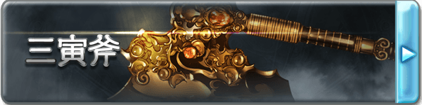

■三寅斧（D+500）
鎮壓整個蒼天之下的威脅、信奉弱肉強食法則的無雙之獸－薩拉薩所使用的巨斧，只服從于至強者逆骨之刃，弱者只會受到它的喰食。外形是一把雙刃的巨斧，在兩面斧刃的中間還延伸出鋒利的劍刃。
作為武器具有5L傷害，【威猛5】【沉重】【攻擊DP-2】的性能，以及特性【星界劍斧】【怪力亂神】。不是強者是無法駕馭這把巨斧的，持有者只能使用力量作為三寅斧攻擊的主屬性，且若自身力量低于對應三寅斧等級的上限（D6C11B16A21），則每低1點，在持握三寅斧的時候會受到每輪1點的，不可豁免的嚴重傷害。
【星界劍斧】
通過一個移動動作，三寅斧可在大劍和巨斧兩種形態中轉化。劍模式下斧刃向下滑動隨后向內收縮，轉化為劍的側刃。
【怪力亂神】
根據三寅斧的狀態不同，將賦予持有者“激昂”與“憤怒”兩個不同的狀態，斧模式對應憤怒，劍模式對應激昂。
憤怒：使用三寅斧進行攻擊時會額外獲得3個附加成功，但是會失去5點攻擊DP。
激昂：使用三寅斧攻擊時會失去3個附加成功（若不足則失去全部），每因此失去1個附加成功則會額外獲得3點攻擊DP。
■[歴礎]三寅斧·真（C+1500）
這個階段的三寅斧才會展現出自己真正的光輝，斧身與斧面變得更為巨大，在更難把握的同時也獲得了更大的破壞力。
作為武器的性能提升，傷害提升至9L，威猛提升至10，體積提升為5，特性【怪力亂神】也得到了提升。
【怪力亂神】
憤怒：使用三寅斧進行攻擊時會額外獲得6個附加成功，但是會失去9點攻擊DP。
激昂：使用三寅斧攻擊時會失去5個附加成功（若不足則失去全部），每因此失去1個附加成功則會額外獲得4點攻擊DP。
■[歴礎]三寅斧·○（B+2500）
這個階段的三寅斧已經不僅僅是薩拉薩的遺產，將會漸漸染上屬于你的色彩，在其他人的手里三寅斧將失去一切效果和能力，變為一把普通的巨斧。從以下幾個詞綴中選擇一個作為三寅斧的后綴，這將會使三寅斧所造成的任意傷害轉變為對應的類型。
焔:灼熱，赤
雪:凍寒，蒼
界:物理，黃
凪:音波，青
煌:神圣，白
煉:褻瀆，黑
作為武器的性能再度提升，傷害提升為15L，威猛提升為15，獲得【眩暈】。特性【怪力亂神】再次得到提升，并且獲得特性【暴虎馮河】。
【怪力亂神】
憤怒：使用三寅斧進行攻擊時會額外獲得9個附加成功，但是會失去12點攻擊DP。
激昂：使用三寅斧攻擊時會失去6個附加成功（若不足則失去全部），每因此失去1個附加成功則會額外獲得5點攻擊DP。
【暴虎馮河】
受到三寅斧傷害的單位會獲得等同持有者力量附加+1的【X易傷】（X為三寅斧造成的傷害類型），持續直到傷害被回復。這是一個B級的創傷來源效果。
■[歴礎]三寅斧·○○（A+4000）
達到這一階段，三寅斧張揚的外表反而收斂，體積變得更小，斧刃略微彎曲而精致，斧面的正中
央鑲嵌了對應屬性顏色的寶石。
對應在B級選擇的屬性，三寅斧的后綴將會再次轉變，并帶來新的效果。
焔→紅天:武器攻擊造成的傷害將會帶來等同傷害的【燃燒】
雪→蒼天:武器攻擊造成的傷害將會帶來等同傷害的【凍結】
界→轟天:武器獲得【眩暈】特性，并且威猛提升10點
凪→疾天:武器獲得【超級貫穿】特性，并且高速提升10點
煌→白天:武器獲得【光明】特性，持有者在死亡后，靈魂會被保護在武器中，若被帶回主神空間則可以支付C+1000重塑身體而復活。
煉→黒天:武器獲得【黑暗】特性，被該武器擊殺的單位將無法以任何方式復活，這是一個A級的詛咒來源效果。
此外三寅斧作為劍斧的性能達到了極致，武器傷害提升為30L，威猛提升至21，體積降低為4，獲得【神兵】特性。這一階段的三寅斧無法被任何方式破壞。此外【怪力亂神】特性再度提升，并且獲得了【斷筋碎骨】特性。
【斷筋碎骨】
三寅斧造成的傷害會對敵人的肢體造成巨大的損傷，會附帶等同傷害的肢體妨害，作用于攻擊的部位。
【怪力亂神】
憤怒：使用三寅斧進行攻擊時會額外獲得15個附加成功，但是會失去20點攻擊DP。并且此模式下的攻擊可以同時對觸及內的所有單位生效。
激昂：使用三寅斧攻擊時會失去9個附加成功（若不足則失去全部），每因此失去1個附加成功則會額外獲得5點攻擊DP。并且此模式下的攻擊獲得【8加骰】。